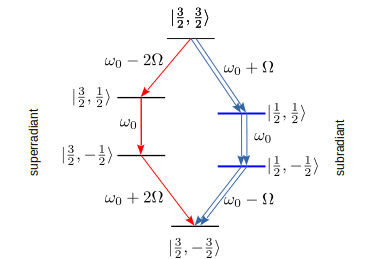

18.1. Trimer: Case II - Model#
We consider a case where the distance between every pair of emitters is identical (the edge length of the triangle is \(a \equiv r_{12} = r_{23} = r_{31}\)), and that the dipole moments are all identical and perpendicular to the plane of the triangle. As discussed in Chapter 16, the system belongs to \(D_{3h}\) point group and \(S_3\) permutation group, for which the Decke basis works perfectly.
18.1.1. Hamiltonian#
We assume that the dipole moment is perpendicular to the plane and thus \(\mathbf{d}\cdot\mathbf{r}_{ij}=0\) for all edges of the triangle.
Taking into account the dipole-dipole interaction, the Hamiltonian is
where
where \(\xi = k_{0} a\). We focus on weak coupling case where the energy shift due to the coupling is much smaller than the transition energy, which can be achieved by \(\Omega \ll \omega_0\). Furthermore, we assume that \(\Omega \ll T\) (\(T\)=temperature) which makes the emitters completely incoherent to each other.
Based on the group theory introduced in Chapter 16, the eigenvectors of the Hamiltonian and the corresponding eigenvalues, which is the Decke basis, are
The energy is ordered from high to low assuming that \(\Omega > 0\). However, \(\Omega\) can be negative depending on the orientation of the dipole moment. Notice that \(|u_{3}\rangle\) and \(|u_{4}\rangle\) are degenerate and thus any linear combination of them is a valid eigenvector with the same eigenvalue. This is the \(U(2)\) gauge freedom discussed in Chapter 16. Similarly \(|u_{6}\rangle\) and \(|u_{7}\rangle\) are degenerate due to the \(U(2)\) gauge freedom. Since the Dicke basis is the energy eigenvector, we use it in this chapter.
18.1.2. Dissipator#
The Lehmberg-Agawal coefficients are given by $\( \gamma^\prime \equiv \Gamma_{12}=\Gamma_{23}=\Gamma_{31}= \frac{3}{2}\gamma_{0} \left[ \frac{\sin\xi}{\xi}\left(1 - \frac{1}{\xi^2}\right) + \frac{\cos\xi}{\xi^2} \right] \)$(eq:Gamma_ij-S3)
where \(\xi = k_{0} a\) where \(a\) is the edge length of the equilateral triangle. The eigenvectors and corresponding eigenvalues of the \(\Gamma\) matrix are
The dissipator in the diagonal form is given by
and the jump operators are
Recall that \(\lim_{a \rightarrow 0} \gamma^\prime = \gamma^{0}\) and thus the decay rate for the superrandiant is \(3\gamma_{0}\) and the rate for the subradiance completely vanishes.
The eigenvectors of
18.1.3. Cascading emission channels#
The jump operator \(L_{j}\) forms a cascading emission channel which we shall call channel \(j\). Similarly, \(L^{\dagger}_{j}\) forms cascading absorption channel. The channel 1 has a decay rate \(\gamma_{0} + 2 \Gamma\) and the remaining two channels have \(\gamma_{0}-\Gamma\). Clearly, channel 1 decays faster than the others. Hence we identify channel 1 superradiant and channels 2 and 3 subradiant. As \(r_{12} \rightarrow 0\), the subradiant channels become totally dark.
Now, we find the actual channel. Applying \(L_{j}\) to \(|eee\rangle = |\tfrac32,\tfrac32\rangle\), we can find a cascade down to the ground state \(|ggg\rangle = |\tfrac32,-\tfrac32\rangle\) along each emission channel. We use the Dicke basis notation. Since the jump operators are not unitary transformation and the norm of vector is not conserved, we ignore any constant factor.
channel 1 $\( \begin{aligned} L_{1} |\tfrac32,\tfrac32\rangle &\propto |\tfrac32,\tfrac12\rangle \\ L_{1} |\tfrac32,\tfrac12\rangle &\propto \textstyle\frac{2}{\sqrt{3}} |\tfrac32,-\tfrac12\rangle \\ L_{1} |\tfrac32,-\tfrac12\rangle &\propto |\tfrac32,-\tfrac32\rangle \end{aligned} \)$
Hence the cascade along the channel 1 is \(|\tfrac32,\tfrac32\rangle \Rightarrow |\tfrac32,\tfrac12\rangle \Rightarrow |\tfrac32,-\tfrac12\rangle \Rightarrow |\tfrac32,-\tfrac32\rangle\).
channel 2
The cascade along the channel 2 is \(|\tfrac32,\tfrac32\rangle \Rightarrow |\tfrac12,\tfrac12\rangle \Rightarrow |\tfrac12,-\tfrac12\rangle \Rightarrow |\tfrac32,-\tfrac32\rangle\).
channel 3
The channel 3 is just a \(U(2)\) rotation of the channel 2. Thus the cascade along the channel 3 is identical to that of the channel 2. Notice that \(L_{1}\) conserves the total angular momentum. On the other hand, \(L_{2}\) and \(L_{3}\) jump out from \(J=\tfrac32\) to \(J=\tfrac12\).

Fig. 18.2 :alt: Emission cascades for S3 :align: center :name: fig:cascades-trimer-case2#
Emission cascades for a \(S_3\) trimer. The thick blue lines indicate doubly degenerate states. The red arrows shows superradiant (channel 1) cascade and the blue arrows subradiant (channesl 2 & 3) cascades.
18.1.4. Detection operators and coherence functions#
Let us assume that the detector cannot distinguish the sources of light. Then, the detection operator is given by
which depends on the location of the detector with respect to the center of the trimer. The unit vector \(\hat{\mathbf{n}}\) denotes the direction from the center to the detector. Using the spherical cordinates \((\theta,\phi)\), \(\hat{\mathbf{n}} = (\sin\theta\cos\phi,\sin\theta\sin\phi,\cos\theta)\).
We can evaluate the intensity can be obtained by
with
where \(\theta\) is the angle between \(\hat{\mathbf{n}}\) and \(\hat{\mathbf{d}}\). Obviously, the intensity vanishes when the detector is placed right above the triangle since the dipole moment points to the detector.
Suppose that the detector is place in the plane of the triangle (\(\theta=\pi/2\)) and then the intensity is measured along \(\phi\), what interference pattern will be observed? It should reflect the three fold rotational symmetry. Let us calculate it.
where \(I_{0}=\frac{3\gamma_0}{8\pi}\), \(p=\langle \sigma^{+}_{i}\sigma^{-}_{i}\rangle \) and \(c = \langle \sigma^{+}_{i}\sigma^{-}_{j\ne i}\rangle\), and
with \(\xi = k_{0} a\) as before. Expanding \(F(\phi)\) with respect to \(\xi\),
Interestingly, the angular dependency appears only \(\xi^6\) or higher order. The first angular dependency \(\cos(6\phi)\) precisely shows the three-fold rotational symmetry. The the highest intensity is obtained at \(\phi = 0,\tfrac{\pi}{3},\tfrac{2\pi}{3}\) and the lowest intensity at \(\phi = \tfrac{\pi}{6},\tfrac{\pi}{2}\). Thus the maximum and minimu intensities are
and their difference is
which is quite small for \(\xi \le 1\) as shown in this table:
Actually, this table is irrelevant for the current model (weak dipole-dipole interaction limit), since we have \(c=0\) for any type (symmetry) of triangle. Thus, the intensity is \(I(\phi) = 3p\). Now, we conclude that
{note}
An equilateral three-atom system looks a circle in its in-plane intensity.
18.1.5. Coherence functions#
Using the detector operator, the coherence functions are $\( g^{(1)}(\hat{\mathbf{n}}_{1},t;\hat{\mathbf{n}}_{2},t+\tau) = \frac{\langle D^{\dagger}(\hat{\mathbf{n}}_{1},t) D(\hat{\mathbf{n}}_{2},t+\tau)\rangle}{\langle D^{\dagger}(\hat{\mathbf{n}}_{1},t) D(\hat{\mathbf{n}}_{2},t)\rangle} = \frac{\text{tr} \left\{D(\hat{\mathbf{n}}_{2}) e^{\mathcal{L} \tau}\left[\rho_{ss} D^{\dagger}(\hat{\mathbf{n}}_{1})\right]\right\}}{\text{tr} \left[D^{\dagger}(\hat{\mathbf{n}}_{1})D(\hat{\mathbf{n}}_{2}) \rho_{ss}\right]} \)$
and
In particular, we are interested in no-delay coherence measured at a single point. First, we simplify \(D^2\)
where we used the fact that there is no coherence between the emitters which makes \(k=j\) and \(\ell=i\). Using this expectation value and the intensity \(I=3p\), we obtain
The no-delay coherence function is \(g^{(2)}(0) = \tfrac43\) regardless of the location of detectors and also independent from the size of the triangle. This suggests that photon bunching can be seen any direction, even above the triangle plane where the intensity is very small. The difference between the present result and Chapter 17.1 is not due to the symmetry itself. In either example, the emitters do not have coherence. We have used a different detection operator here. In other words, we are looking at a different optical mode.
18.1.6. Detection counts by a single detector#
A detector is placed in the direction specified by a normal vector \(\hat{\mathbf{n}}\) pointing from the center of the triangle to the detector. The effective rate that the detector detects a photon is given by
where \(\Delta\Omega\) is the size of detector aperture in solid angle, and \(\eta\) is the detection efficiency. The detector sees only a fraction of photons and other photons are undetected. We need to include those undetected photons in the stochastic evolution of the emitters. To do so, collapse operators must take into account the undetected photons.
The collpse operator for the detected photons is given by
The emission rate of undetected photons are determined by
Since this matrix depends on the position of the detector, the matrix \(\Gamma^\prime_{ij}\) does not carry the original symmetry and we must diagonalize to construct the collapse operators for undetected photons.
Let \(\mathbf{v}^{j}\) and \(\lambda^{j}\) be the \(j\)-th eigenvector and the corresponding eigenvalue of \(\Gamma^\prime\). Then, we have three collapse operators for undetected photons as
where \(v^{j}_{i}\) is the \(i\)-th component of the eigenvector \(\mathbf{v}^{j}\).
Using the collapse operators \(\{C_{d},C_{1},C_{2},C_{3}\}\) we obtain the evolution of wavefunction consistent with the density matrix obtained from the quantum master equation.